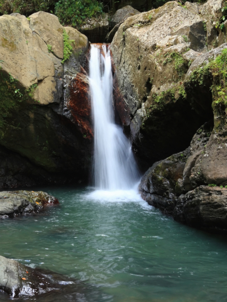

Puerto Rico is a small island in the Carribbean, where there is every beautiful sight taken in by the people who live there. Despite being a very small country compared to the rest of the world, Puerto Rico is filled with adventure and excitement in their culture, and has one of the most eye-capturing sights that you'll ever see.
The Castillo San Felipe del Morro, also known as the El Morro, this fort is one of Puerto Rico's oldest structures in the corner islet of Old San Juan. This fort was first used by the Spanish as a defense until the United States took charge of it due to the Spanish-American War. During the First & Second World Wars, El Morro was used as a miltary installation. Today, The fort is used as a National Site for tourists around the world to see.
The breath-taking sight of the El Yunque Rainforest is a wonderful way to immerse yourself in nature. The El Yunque has a very diverse ecosystem that is home to many unique plants and animals, including the famous coqui frog.